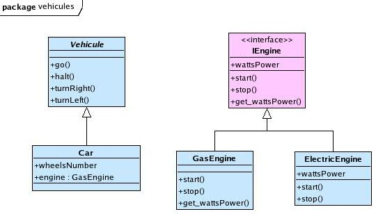

The O.M.G. “Model Driven Architecture” is based upon a major distinction between the analysis and design levels in software conception. The analysis work is supposed to produce platform independent models (P.I.M.) and the design level generates (in an automated way if possible) more detailed models which include the specificities of the platform (hardware and operating system) they target. There is only one PIM, which embeds all the domain needed particularities. It can be derived in many PSM, one for each targeted system.
The given transformations are useful for designers who need to automatize the path from a PIM analysis model to a PSM design model.
Take a simple model describing cars structure. This model is too simple so it needs to be enhanced.
We can write a Kermeta program which will transform this model.
This transformer needs access to the Uml2 MDK tools then it must load the original model.
As this model must stay inviolate, the first task is the cloning of this model into a equivalent one which will be the final result.
The “vehicules” model needs an engine interface the two engine classes will inherit from, an accessor on the “wattsPower” attribute, a composition link between the “Car” and the “GasEngine” classes.
When new added elements must be named, the tool has naming methods which can be overwritten in order to specialize this naming. To do such a modification, create your own tool by inheritance of the generic one and rewrite the good operations (look at SpecializedEngineInterface_Tool Class in the example).
@mainClass "vehicules::Main"
@mainOperation "main"
package vehicules;
require kermeta
require "platform:/plugin/org.kermeta.uml2/src/kermeta/transformations/StaticTools.kmt"
require "platform:/plugin/org.kermeta.uml2/src/kermeta/transformations/UmlCloneFactory.kmt"
class Main
{
reference origModelName : kermeta::standard::String
reference origModel : uml::Model
reference cloneModelName : kermeta::standard::String
reference cloneModel : uml::Model
reference root_package : uml::Package
/**
* This sample program will preserve the given sample model
* in order to be reused as many times as you want.
* So the program loads the model, clones it,
* and then does the transformations on the clone.
* You can then open the resulting model in the Ecore editor
* or use a graphical editor (like TopCased) to draw it.
*/
operation main() : Void is do
stdio.writeln(" >>>------> loading the original model")
//creating needed instances
origModelName := "platform:/resource/org.kermeta.uml2.samples/vehicules/models/vehicules.uml"
// load the given UML2 resource
var inputRepository : kermeta::persistence::EMFRepository init kermeta::persistence::EMFRepository.new
var inputResource : kermeta::persistence::EMFResource
inputResource ?= inputRepository.getResource(origModelName)
// "instances" only gives the main diagramm package for the targeted code tree
origModel ?= inputResource.instances.one
stdio.writeln(" >>>------> cloning the original model (kept virgin) into a new one")
var factory : uml::transformations::UmlCloneFactory init uml::transformations::UmlCloneFactory.new
factory.initialize
cloneModel := factory.cloneStaticDiagram(origModel)
stdio.writeln(" >>>------> transforming the cloned model")
// we need the package containing the classes
root_package ?= cloneModel.packagedElement.select{ e | e.name == "vehicules" }.one
addGetterOnWattsPower
addEngineInterface
addCarEngineComposition
addEngineGeneralisation
stdio.writeln(" >>>------> saving the transformed model")
cloneModelName := "platform:/resource/org.kermeta.uml2.samples/vehicules/models/improved_vehicules.uml"
var outputRepository : kermeta::persistence::EMFRepository init kermeta::persistence::EMFRepository.new
var outputResource : kermeta::persistence::EMFResource
outputResource ?= outputRepository.createResource(cloneModelName, "platform:/plugin/org.eclipse.uml2.uml/model/UML.ecore")
outputResource.instances.add(cloneModel)
outputResource.save()
stdio.writeln(" <------<<< model saved")
end
///////////// code for transformations //////////////////
operation addGetterOnWattsPower() is do
// we get the "GasEngine" class (before this class will loose its attributes, passed to the interface)
var cl : uml::Class
cl ?= root_package.packagedElement.select{ e | e.name == "GasEngine" }.one
// we need the accessors tool for transformation
var accTool : uml::transformations::Accessor_Tool init uml::transformations::Accessor_Tool.new
// we make the getter corresponding to each property of the class
cl.ownedAttribute.each{ prop |
// we add the getter operation corresponding to the property
accTool.addGetter(cl, prop)
}
end
operation addEngineInterface() is do
// we get the "GasEngine" class to generalize it in a "IEngine" interface
var cl : uml::Class
cl ?= root_package.packagedElement.select{ e | e.name == "GasEngine" }.one
// we need the interface tool for extraction
var ifTool : SpecializedEngineInterface_Tool init SpecializedEngineInterface_Tool.new
// we get then the interface
var ifc : uml::Interface
ifc := ifTool.extractInterface(cl)
// we add the new interface to the resulting model
root_package.packagedElement.add(ifc)
// Rem: the interfaceRealization between the interface and the (original)
// concrete class doesn't need to be added to the model
// (it is owned by the concrete class)
end
operation addCarEngineComposition() is do
// we get the "IEngine" interface to link it with "Car" class
var iEngine : uml::Interface
iEngine ?= root_package.packagedElement.select{ e | e.name == "IEngine" }.one
// we get the "Car" class to associate it with an "IEngine" interface
var clCar : uml::Class
clCar ?= root_package.packagedElement.select{ e | e.name == "Car" }.one
// we need the association tool for transformation
var assocTool : uml::transformations::Association_Tool init uml::transformations::Association_Tool.new
// we then get the new composition
var assoc : uml::Association init uml::Association.new
assoc := assocTool.addNavigableComposition(clCar, iEngine, "poweredBy", "engine")
// we add the new association to the resulting model
root_package.packagedElement.add(assoc)
end
operation addEngineGeneralisation() is do
// we need the interface tool to link interface and engine
var ifTool : SpecializedEngineInterface_Tool init SpecializedEngineInterface_Tool.new
// we get then the "IEngine" interface
var ifc : uml::Interface
ifc ?= root_package.packagedElement.select{ e | e.name == "IEngine" }.one
// we select and process the classes with a WattsPower attribute
root_package.packagedElement.select{ e |
var c : uml::Class
c ?= e
if c != void then
not c.ownedAttribute.select{a | a.name == "wattsPower"}.isEmpty
else false end
}.each{ cl |
var c : uml::Class
c ?= cl
if c != void then ifTool.addInterfaceRealization(ifc, c) end
}
end
}
////////////// class for overwrite interface method for name
class SpecializedEngineInterface_Tool inherits uml::transformations::Interface_Tool
{
/** overwrite the original method */
method nameForInterface(name : kermeta::standard::String) : kermeta::standard::String is do
result := "IEngine"
end
}The cloned and transformed model has been saved under improved_vehicules.uml2 and can be used as it is or being draft by a graphical tool like TopCased.
The resulting model of our transformer program looks like above.

It comply with our goals:
The result model includes all the UML elements which were in the original model, with all their characteristics.
The GasEngine class has now an interface and a accessor to its attribute.
The interface operations are abstract when the GasEngine operations are concrete implementations (may be with an empty body for some of them).
The ElectricEngine inherits from this interface.
The Car now is now composed of a GasEngine (the corresponding association exists in the model even it has not be represented by TopCased).
Any UML2 model can be transformed like this.
You can visit it and apply conditional transformations on the fly to each kind of UML2 element. Look at the Valooder chapter in the Umlaut-Architecture-Guide to have a idea of how to do.